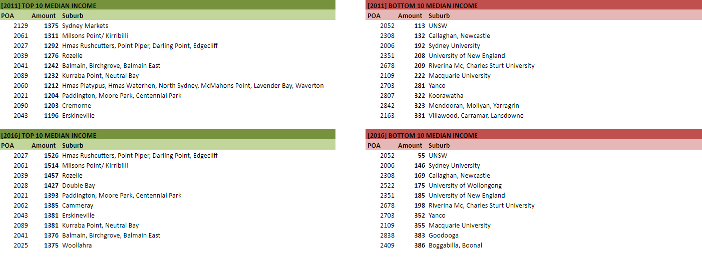
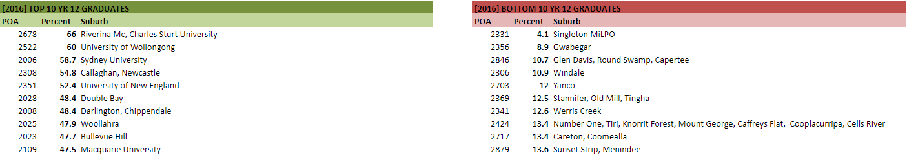

Ratio of high income earners, Male vs Female.
To show the existing issue, below are two 3D extrusions showing the ratios of high income earners, males represented as on the left and females represented as right. The intensity of the colors represent the education ratio in the area, while the extrusion height shows the income ratio.
In 2011:
In 2016:
So what does this data conclude?
We can clearly see that the spread in education is relatively the same in both datasets, however the male income ratio is greatly higher than the female one. The paygap does exist.
So why does this gap exist?
Many sources once claimed that the issue was that females were less experienced and educated than men, however this was proven wrong in 2017 by Shadow treasurer Chris Bowen, who revealed that the education gap between genders does not contribute at all (In fact females were more educated).
But just in case he was wrong, lets examine the growth over the years.
Growth rate, Male vs Female
Since it's a little difficult to see the exact changes in a 3d scale, below are male and female growth comparisons for both income and education. (Dark blue represents growth, red indicates negative growth)
From this data, we can see that the female income rate has actually grown significantly in 2016 comparison with 2011.
Some extra statistics
 Conclusion
- The high income pay gap exists.
- The latte line is very prominent within high income regions.
- The high income pay gap exists.
- The high income pay gap is closing.
- The education gap is closing
- The highest income earners are close to the cbd or in the north shore.